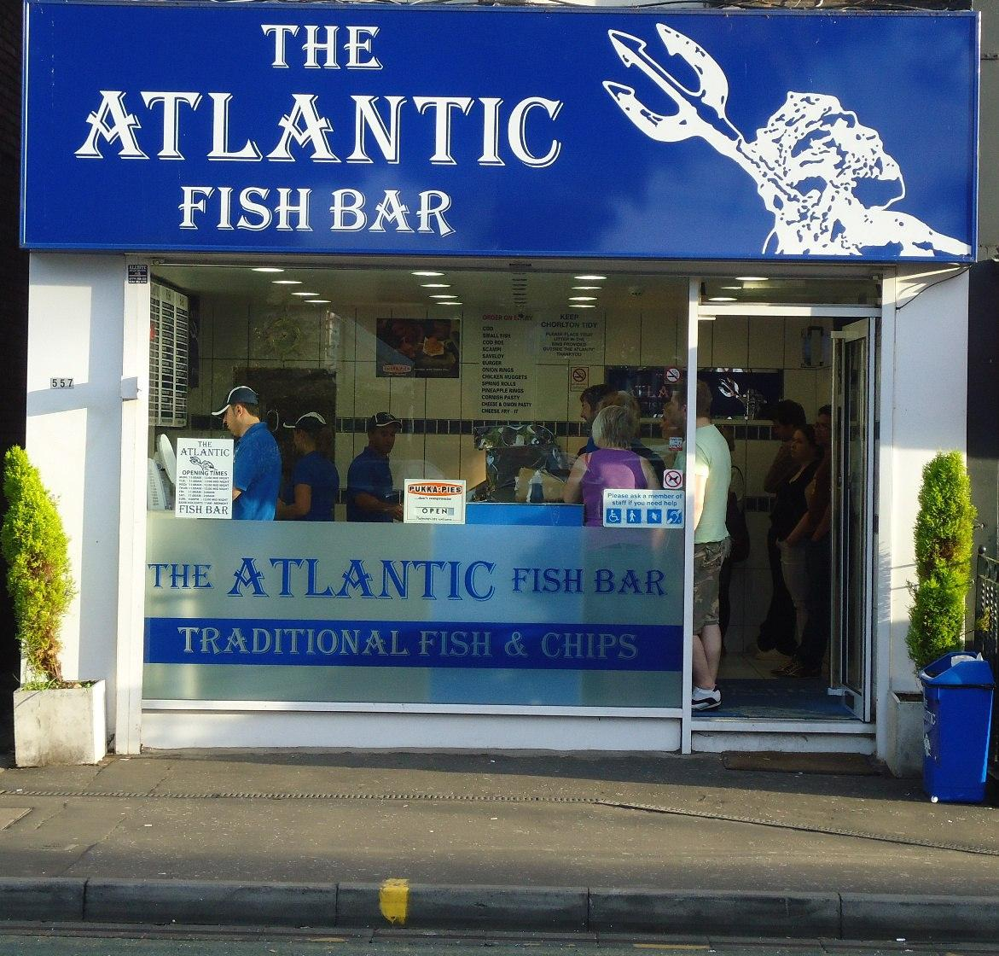
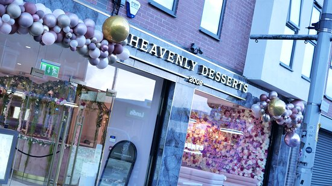

Dining Out

The Atlantic
The Atlantic, which was made back in 2006, is a famous traditional fish and chip shop. It's famous people go there to eat during the wintertime as the food is warm and ready to eat, Buts it's a all year round to eat. There are different sizes of cods (fish) and chips to orderamongst British

Hevenly Desserts
Heavenly Desserts is a dessert shop opened in 2008. Known for its famous desserts such as crepes, coffles, milk cakes, cheesecakes and many more. With that they also have some of their signature drinks such as their hand crafts drinks, craft lemonades & mojitos, milkshakes & smoothies with soft and hot drinks. It’s known to be ranked UK’s no1 dessert shop. Located in Wilsmlow Road.

Insomnia Cookies
Insomnia cookies was opened in 2003, it is a famous dessert shop known for its freshly baked cookies and many more, such as (cookie) cakes, milkshakes, ice creams, wiches, combos ( both ice cream and cookies).
CONTACT
Manchester, UK
Phone: +44 151515
Email: mail@mail.com
Phone: +44 151515
Email: mail@mail.com